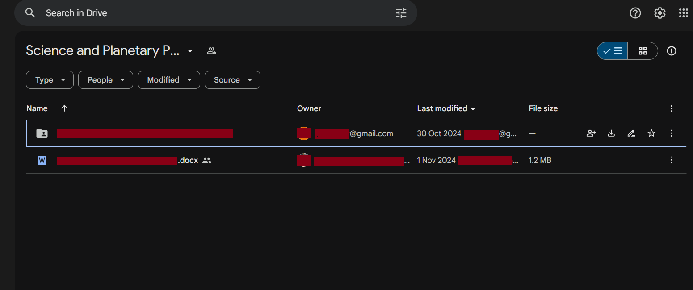

National Aeronautics and Space Administration (NASA)
It all started in November 2024, when I began taking my slow transition into cybersecurity more seriously. At that time I was six months into working as an ICT Technician, juggling full-time work while studying and experimenting during whatever free time I had, mostly in the evenings after work. One day, while scrolling through LinkedIn, I came across several viral posts from ethical hackers around the world sharing their success stories of finding security vulnerabilities at NASA.
I was immediately intrigued and wanted to try it out for myself. I researched NASA’s Vulnerability Disclosure Program (VDP) and discovered that it was a public program where anyone could responsibly report security vulnerabilities on NASA’s systems. With nothing to lose, I decided to give it a shot and began looking for potential vulnerabilities on NASA’s public-facing websites and applications.

At that point, my knowledge was mostly theoretical and roughly equivalent to the CompTIA Security+ syllabus. Despite the lack of experience, I decided to take the leap and registered an account on Bugcrowd, targeting NASA’s VDP specifically. What was the worst that could happen? At best, I would find something. At worst, I would make mistakes and learn from them.
My instincts told me that I would probably progress faster by focusing on CTFs and structured learning platforms. However, impatience, and perhaps a bit of greed, got the better of me. I wanted to discover a valid vulnerability on NASA.
I read countless write-ups on Medium and searched for success stories on LinkedIn. Every article provided new insights, but I quickly realized that most of what I learned could not be directly reused against NASA’s VDP. Vulnerability Disclosure Programs and bug bounties operate on a strict first-come, first-served basis. Only the first person to report a valid vulnerability receives credit, while subsequent reports of the same issue receive nothing.
At this point, you might be wondering how someone as inexperienced as I was could possibly find something new, given that thousands of far more skilled hackers had already tested the same target. One key lesson I learned from experienced hackers was this. The more reconnaissance you perform on a target, the larger the attack surface you uncover, and the higher the probability of finding a security flaw waiting to be exploited. In simple terms, this is a game of probability.
That realization pushed me to fully commit to Google Dorking.
Google Dorking is the practice of using advanced Google search operators to uncover hidden information on the internet. I spent days and nights crafting various Google dorks to search for exposed files, directories, and parameters across NASA’s public-facing domains. I was determined to find something others had overlooked. I did discover many documents that appeared confidential, or so I thought. Each time I submitted a report through Bugcrowd, it was triaged as P5, Informational, and therefore not eligible for NASA’s Letter of Recommendation. I later learned that many of these documents were intentionally public under FOIA, the Freedom of Information Act.
After six weeks of relentless Google Dorking during my limited free time, on 28 December 2024, I finally stumbled upon a PowerPoint presentation slide from NASA, thanks to the following Google Dork:
site:nasa.gov "https://drive.google.com/folder/"On the fifth slide of the presentation, there was a Google Drive folder link. Out of desperation and fading hope, I opened it immediately. To my surprise, it was indeed a Google Drive folder belonging to NASA.
I explored the contents carefully, looking around for any potential security issues. To my luck, I discovered that although the Google Drive folder was public, anyone could edit or delete its contents, including files uploaded by the folder owner. This directly violated the core principles of the CIA triad, Confidentiality, Integrity, and Availability.

I immediately reported the issue to NASA through Bugcrowd. Two days later, on 30 December 2024, the Bugcrowd triager marked the report as Not Applicable, citing that the Google Drive was intended for public use. At that moment, I felt discouraged and questioned how much longer it would take for me to find a valid vulnerability at NASA. Nevertheless, I kept my head up and continued refining my OSINT techniques.
Fast forward to 25 June 2025. I received an unexpected email from Bugcrowd stating that NASA and Bugcrowd had re-triaged my report and deemed it valid. It turned out that other ethical hackers who discovered the same Google Drive after me had uploaded proof-of-concept malicious files and reported the issue. Since VDPs operate on a first-come, first-served basis, NASA and Bugcrowd contacted me because I was the first person to report the vulnerability.
They explained that the initial triage had missed the fact that write access was enabled on the folder. As a result, my original report was reopened.
Reading that update made my jaw drop. I had already assumed I had failed at finding a vulnerability on such a high-profile target. Naturally, I was over the moon. It felt incredibly rewarding to see that my persistence had finally paid off.
After several weeks of internal discussions between Bugcrowd and NASA, the misconfiguration was fixed. On 22 August 2025, I received my NASA Letter of Recommendation. The report was officially resolved and closed on 28 August 2025.

This experience taught me the true value of perseverance, patience, and continuous learning in cybersecurity. More importantly, it solidified my motivation to continue pursuing ethical hacking, not just as a hobby, but as a long-term career.
See you in the next hack.
— @aaronamran
August 2025